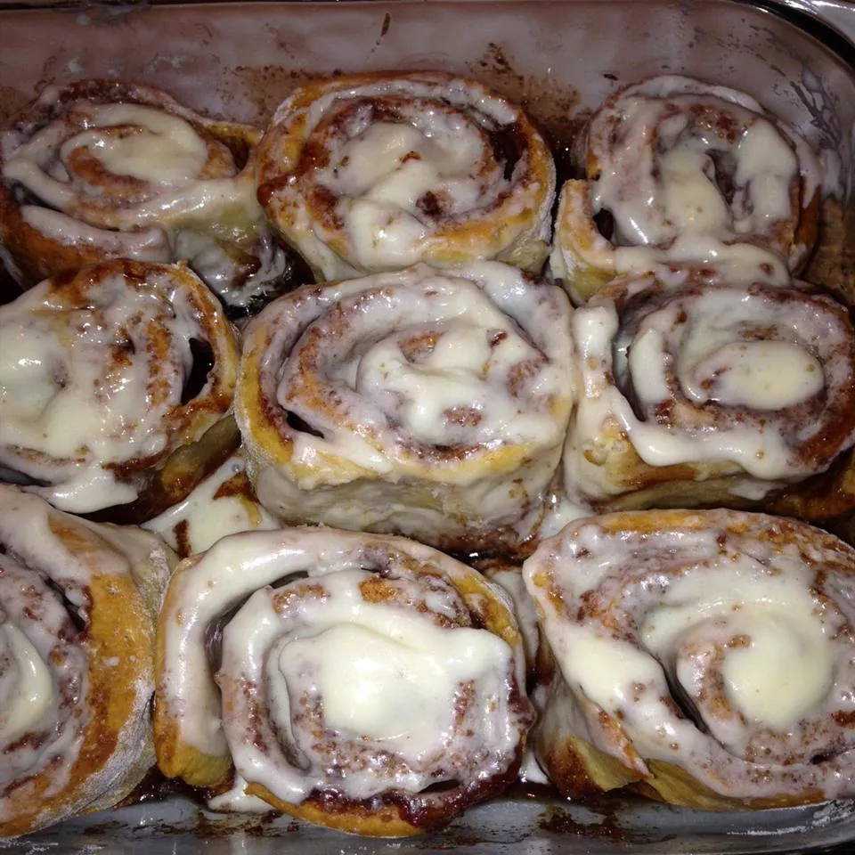

Cinnaroll

Description
I watched mom make these rolls when I was young and have always loved how easy they are to make!
Ingredients
- 2 (.25 oz) packages active dry yeast
- 1/3 cup white sugar
- 2 cups warm water (110 degrees F/45 degrees C)
- 1 tbsp salt
- 6 1/2 cups all-purpose flour, divided
- 2 eggs
- 1/3 cup veg. oil
- 1/2 cup white sugar
- 2 tsp ground cinnamon
Steps